1环形码头
悉尼渡轮的总枢纽，1788 年第一舰队登陆的 Sydney Cove 就在这里。左手歌剧院、右手海港大桥；渡轮和火车都能直接刷银行卡上车。
10.1 出发、10.12 回到中国。悉尼 3 晚、圣灵群岛 3 晚、墨尔本 3 晚——两段国内航班把三座城串成一条线。这份路书按天写：去哪、为什么值得去、到了看什么。
城市为住宿地；紫色虚线是国内航段示意（不是实际航迹）。逐日地图见下文各天。
按活动的地点与时段判断（🟢 照常 / 🟡 注意 / 🔴 可能受影响），10-01 21:12 更新。 门槛是经验值，停不停以运营商为准；离活动 8 天以上只看趋势。点日期跳到当天。
Duke 和 Eddy 9.30 先飞西安过一夜，10.1 从西安直飞悉尼；Katherine 10.1 下午从杭州出发，在广州转国际航班。两路都是红眼航班，10.2 早上在悉尼机场 T1 会合。
上海/杭州 → 西安 → 悉尼；Duke/Eddy 9.30 已先飞西安过夜
国内段延误会连累国际段（两张票、误机自负）：MU2170 若延误，立刻在西安机场改签当日更早班次；实在赶不上 MU791 只能自费改期。出门前查西安/浦东天气与航班动态。
住在 Elizabeth Bay，离 Kings Cross 站步行约 9 分钟。第一天沿环形码头—歌剧院—植物园—达令港把港湾走一圈；第二天上午悉尼大学、下午邦迪到库吉的海岸步道、晚上达令港烟花；第三天跟团南下 Kiama 看海崖大桥和喷水洞；第四天早上逛新鱼市，下午飞往圣灵群岛。
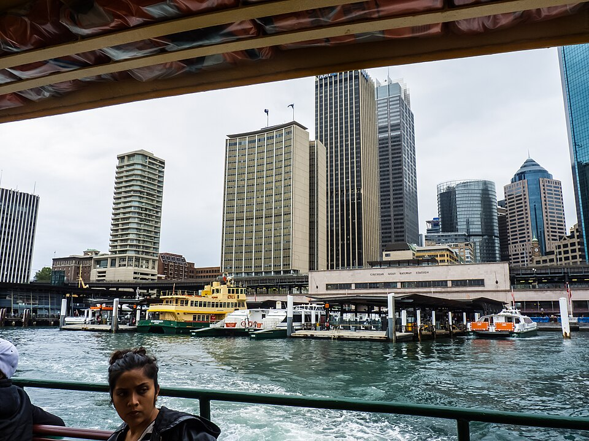
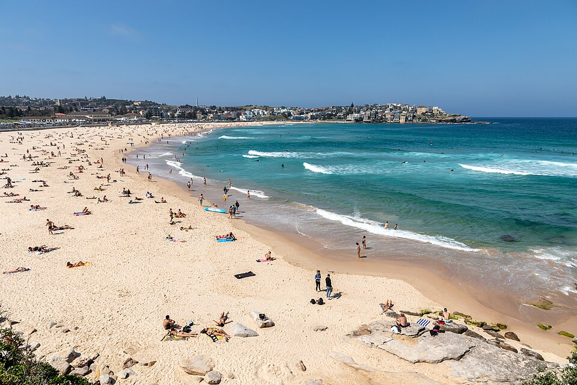
08:00 落地 → T8 进城 → 环形码头 → 14:30 歌剧院普通话导览 → 植物园 → 达令港夜景
🔴 本日唯一硬结是行李：约 10:15 就到 Elizabeth Bay 楼下，而 Airbnb 无前台、入住通常 15:00。三条出路：①提前与房东谈早入住/门厅寄存；②出 T8 时直接在 Central 站寄存（Radical Storage/Bounce，A$3.25–8/件·天、24h）；③Kings Cross 站周边寄存点。 下雨改室内：新南威尔士美术馆(免费)、澳博物馆、QVB 购物廊。歌剧院导览须提前网订。
悉尼渡轮的总枢纽，1788 年第一舰队登陆的 Sydney Cove 就在这里。左手歌剧院、右手海港大桥；渡轮和火车都能直接刷银行卡上车。
悉尼最早的殖民街区，保留了大量 19 世纪砂岩建筑和窄巷，老酒馆扎堆，适合午餐。
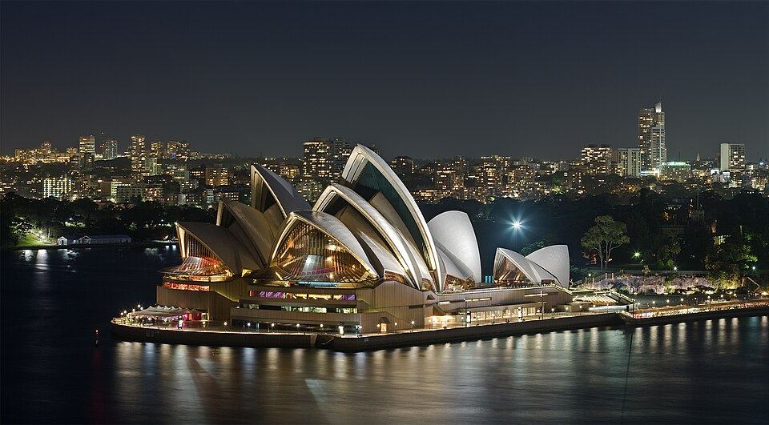
丹麦建筑师约恩·乌松设计，1973 年落成，2007 年列入世界遗产。屋顶的「帆」贴着一百多万片瓷砖。本行程 10.2 14:30 参加官网的普通话导览。
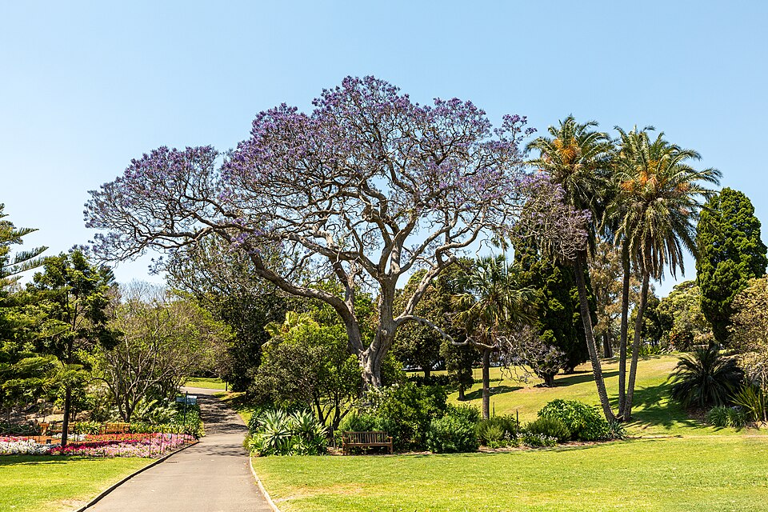
1816 年建园，是澳洲最古老的科学机构之一。沿海湾步道一直走到麦考利夫人座椅，能把歌剧院和海港大桥拍进同一张照片。
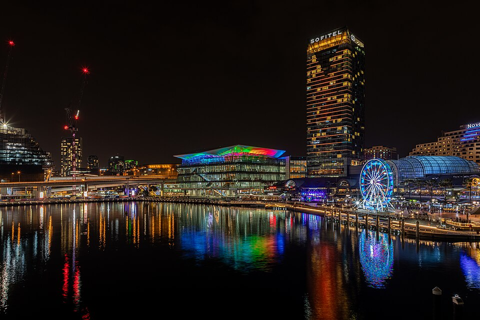
昔日的码头与货运区，1988 年澳洲建国两百周年时改造成步行海滨。本行程 10.3 周六晚在这里看烟花。
上午悉尼大学（主四方院+博物馆，免费）→ Glebe/Newtown 午餐 → 下午海岸步道 → 20:30 烟花
邦迪-库吉海岸步道是全天最靠天的项目：大风/降雨可只走到 Bronte 即收，或整段换成室内（动力博物馆 MAAS、维多利亚女王大厦、校内 Chau Chak Wing 博物馆多待一会）。烟花遇雨常照放但视野差，可改在室内观景点/酒吧看。 ⚠️ 悉尼大学校园本身不怕下雨——四方院回廊与博物馆都能避雨，是本日的天然备胎。
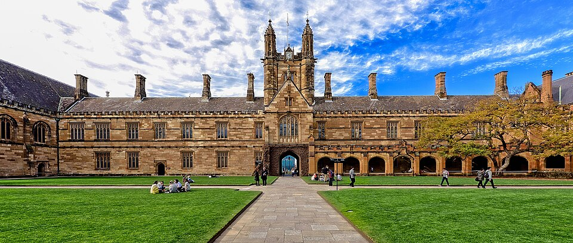
悉尼大学 1850 年创立，是澳洲最古老的大学。主楼四方院是哥特复兴式的砂岩建筑，周末校园开放、人也少。
紧挨悉尼大学的公园，湖边草坪是学生常待的地方，从这里走进校园很顺路。
悉尼大学 2020 年开放的博物馆，有古地中海文物、原住民艺术和自然史收藏，免费入场；周末只在中午到下午开。
Glebe 和 Newtown 是悉尼内西区的老街区，二手书店、咖啡馆和各国小馆子很多，适合午饭。
悉尼最有名的海滩，一弯新月形的沙滩。南端的 Bondi Icebergs 海水泳池是经典机位，也是邦迪—库吉海岸步道的起点。
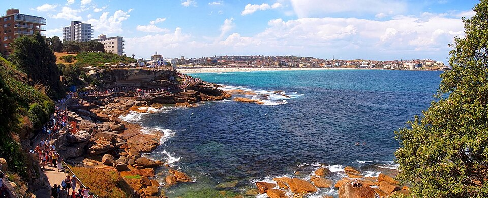
海岸步道的终点。一路经过 Tamarama、Bronte 和临海的 Waverley 墓园，悬崖和海湾交替出现，全程约 6 公里。
昔日的码头与货运区，1988 年澳洲建国两百周年时改造成步行海滨。本行程 10.3 周六晚在这里看烟花。
海崖大桥 Grand Pacific Drive + Kiama 喷水洞 + 海岸小镇；不跑远者可留市区 Taronga
喷水洞要有涌浪才喷、海崖大桥要有能见度，预报太差可与 10.3 城区日对调（但烟花只在 10.3）。跟团车不等人、宁可早到 15 分钟；已订团注意退改期限。 👥 不想跑远的人可留市区走 Taronga 动物园（渡轮 12 分钟、AUD 51–55）+ 鹦鹉岛/屈臣氏湾，晚上市区会合。 📅 今天是 NSW 劳动节长周末的周日，南下车流加重，回程晚点半小时属正常，晚餐别订太早。
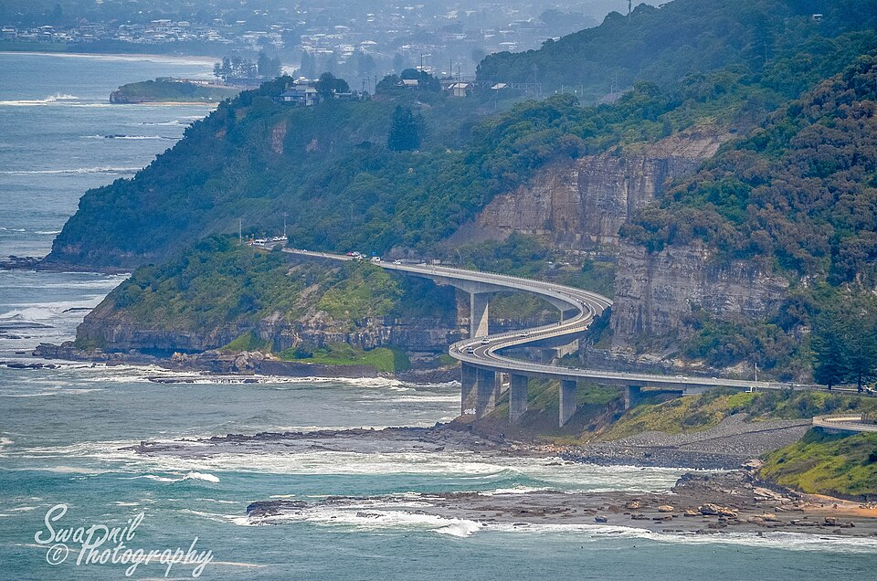
2005 年通车的离岸弯桥，为绕开常落石的悬崖而建，是「大太平洋公路」Grand Pacific Drive 上最上镜的一段。
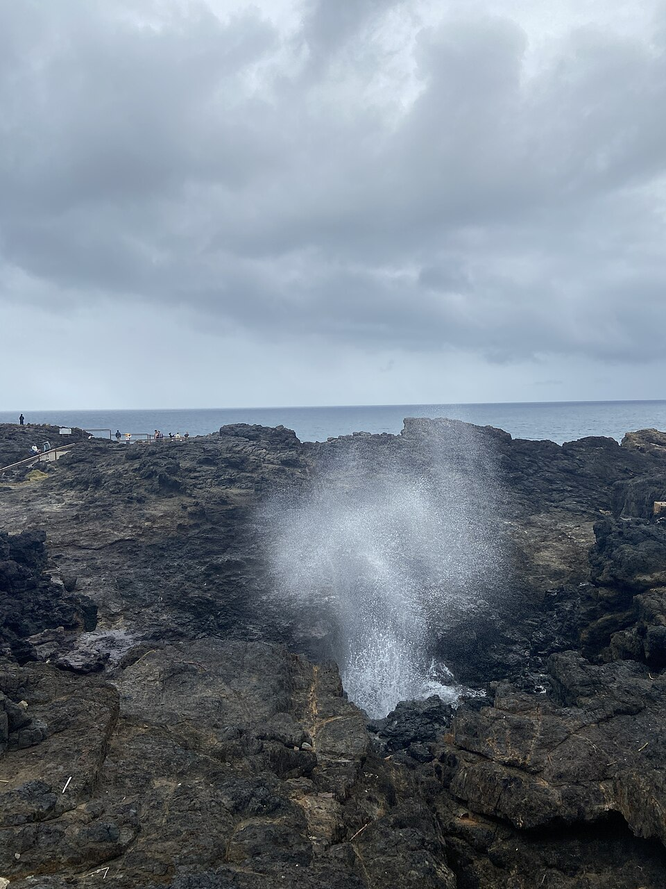
海浪灌进岩洞后从顶上的孔里喷出来，涌浪越大喷得越高；旁边立着 1887 年建的白色灯塔。
09:00 从容退房 → 鱼市逛+海鲜午餐 → 15:40 JQ838 → 约 17:15 落地 PPP → 18:00 入住
JQ838 是当日最晚一班直飞（上午另有 JQ840），取消则只剩经布里斯班的中转或次日；捷星取消率偏高，务必提前网上值机并盯航班动态。托运行李需提前加购。 🔴 两个新风险都因为傍晚才到：①Whitsunday Transit 电话订位窗口 07:30–16:30，落地时已下班——接送必须在起飞前打 07 4946 1800 订掉（连 10.8 回程一起订）；②今天是昆州 King's Birthday 公假，超市餐厅早关（Woolworths 常 18:00–20:00 打烊），落地先买水与次日早餐。 ⚠️ 15:40 已按 9.13 出票单核实；网上值机时再看一眼有无航变通知。
2026 年 1 月迁入 Blackwattle Bay 新馆（1 Bridge Rd），是南半球最大的鱼市之一。现开生蚝、刺身和海鲜拼盘就在场内吃。
主街（Shute Harbour Rd）集中了餐厅、超市和各家出海团的门店，从住处走过来只要几分钟。
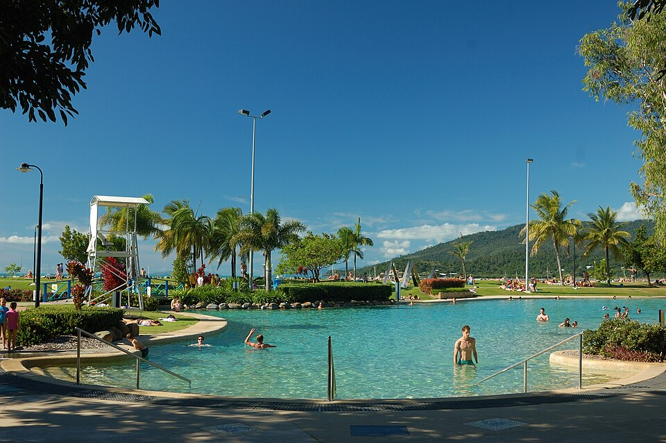
Airlie Beach 市中心免费的海边泳池，有救生员，不用担心海里的水母；傍晚来看日落。
大本营是 Airlie Beach。这里是大堡礁的门户之一：一天坐 60 分钟观光飞机从空中看心形礁，一天坐高速橡皮艇出海——两处浮潜点、白天堂沙滩、再爬上 Hill Inlet 观景台看白沙与碧海交错的纹路。
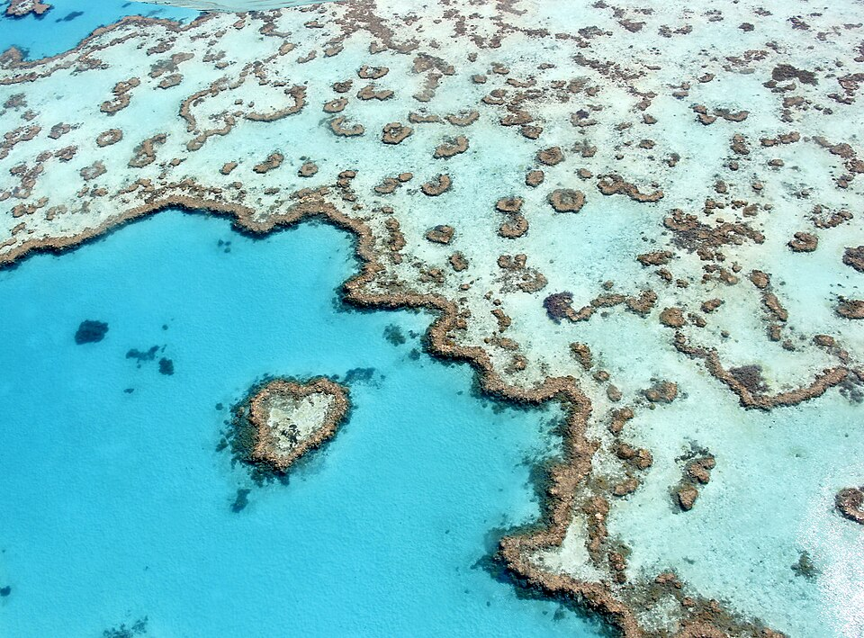
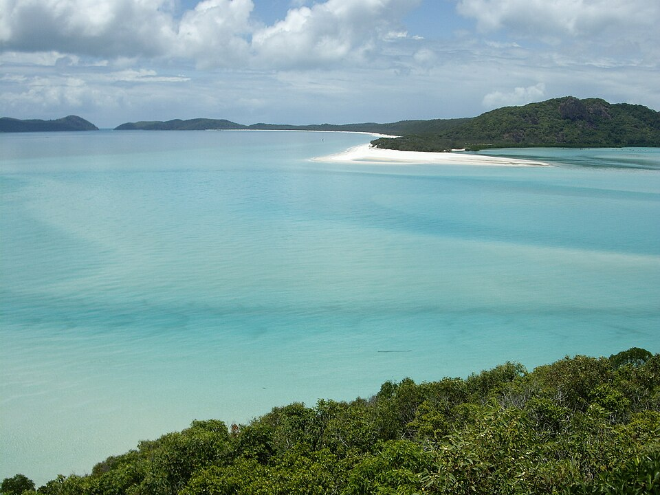
上午机动 → 12:20 住宿门口接 → 13:00 观光飞机（心形礁+白天堂+Hill Inlet 空中视角）→ 傍晚泻湖日落
观光飞机靠能见度：低云/雷雨会取消或改期，运营商通常免费改期——但本行程 10.7 已排北线全天、10.8 上午就飞墨尔本，能改的只有当天更晚的班次（官方每日 07:00/08:30/10:00/11:30/13:00/14:30）。 🔴 接送风险：产品页写「仅接送酒店、不接送私人住宅区」，订单须填全称 The Boathouse Apartments / 33 Port Dr，并提前一天电话复核接车时间；万一被告知不接，打车到 Whitsunday Airport 约 10 分钟 / A$25–35（不是 PPP，别开去 Proserpine）。
大堡礁 Hardy Reef 里一块天然的心形珊瑚礁，只能从空中看（船不能靠近），是观光飞机的主角。
Airlie Beach 市中心免费的海边泳池，有救生员，不用担心海里的水母；傍晚来看日落。
白天堂沙滩 · Hill Inlet 观景台 · 2 个浮潜点；07:45–08:15 住宿门口免费接车
快艇出海最怕风浪，停航则圣灵段只剩 10.6 可用（10.5 傍晚 17:15 才落地、10.8 上午 10:15 就飞墨尔本）——只能二选一：退款，或整体挪到 10.6（那样 10.6 的观光飞机也得一并改期；两项同属飞猪一单 CZ0001，找同一客服一起改）。 📞 须提前 48h 致电 07 4946 6848 复核订位与接车时段。 防蜇衣下水必穿；怕晕船坐中后段、提前 30 分钟服药。
Hook Island 一带的近岸珊瑚礁，热带鱼成群，运气好能看到海龟。具体在哪儿下水，由船长当天看风向决定。
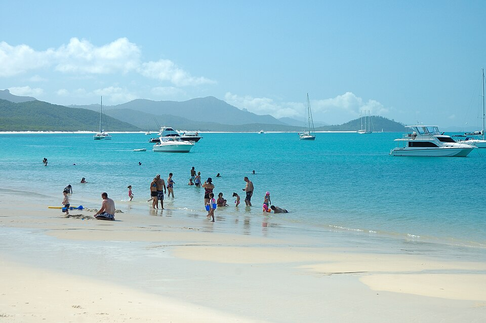
约 7 公里长的白沙滩，沙子几乎是纯的二氧化硅，细得像面粉、踩上去也不烫脚，常年被评为世界最美海滩之一。
白天堂沙滩北端的潮汐湾。退潮时白沙和碧海交错成漩涡状的纹路，要爬一小段坡到观景台看，是圣灵群岛最出名的画面。
住在 CBD 北侧的 Little Lonsdale St，整栋都在免费电车区里。落地当晚逛弗林德斯站和涂鸦巷；第二天跟大巴团走大洋路到十二门徒；第三天小火车、野生动物园和企鹅归巢；最后半天逛市场、看 Brighton 彩色小屋，下午 4 点去机场。
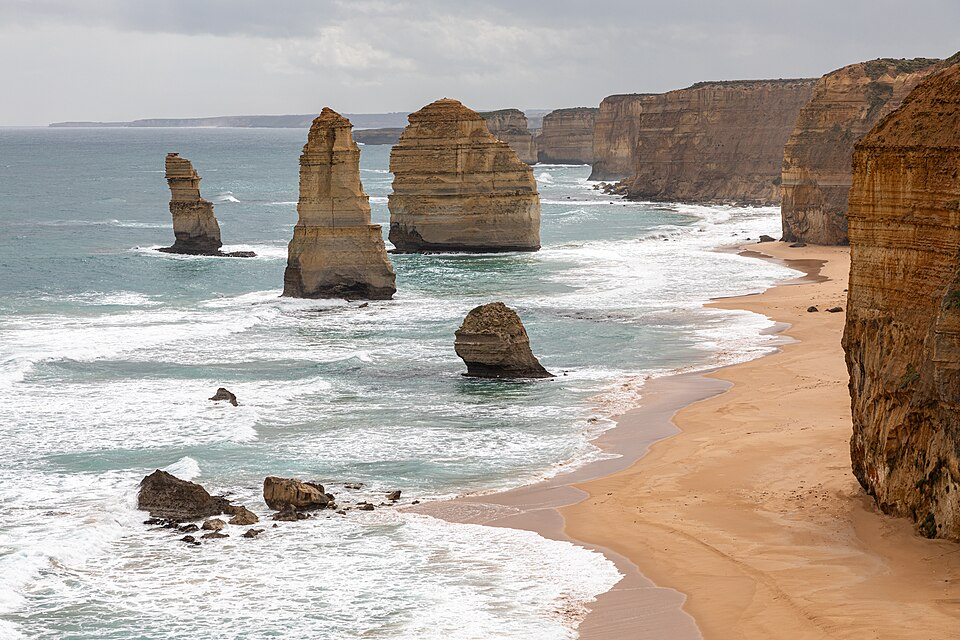
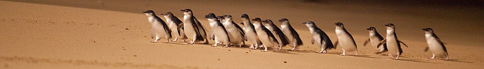
🔴 07:15 前退房、07:45 接车 → JQ833 10:15 起飞 → 16:00 落地 MEL → 晚上 CBD 步行圈
🔴 本日最容易翻车的是清晨那一段：Whitsunday Transit 的回程接送按起飞前约 2.5h 发车（JQ833 10:15 → 约 07:45 接车），必须提前预约且提前 24h 致电确认（07 4946 1800）。 ⚠️ 公开时刻表另有 JQ833「11:15 起飞」一档——以出票单/值机页为准，若为 11:15 全线后延 1 小时。 JQ833 同为当日唯一直飞，取消则需经布里斯班中转。墨尔本「一天四季」，随身带外套与雨具。
Airlie Beach 市中心免费的海边泳池，有救生员，不用担心海里的水母；傍晚来看日落。
1910 年落成的黄色车站，墨尔本的地标；本地人约在正门「钟下见」。
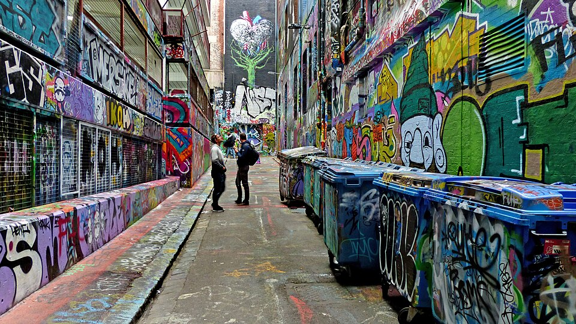
墨尔本最出名的涂鸦巷，墙上的作品不断被新的覆盖，每次来都不一样；就在联邦广场斜对面。
在 Little Bourke St，从 1850 年代淘金热时形成，是西方世界延续最久的唐人街之一。
纪念拱门 → 洛恩 → 阿波罗湾 → 十二门徒 → 洛克阿德峡谷 → 伦敦桥
大洋路遇大风/暴雨极不值当，沿海观景台会临时封闭；预报差可与 10.10 对调（但 10.10 是已订的整日组合团，实际很难换——优先联系团方改期）。 🎫 集合点/发车时刻以确认件为准（现文档 07:00 为典型口径）：多数团在 Federation Square 一带发车，部分按 Little Collins/Swanston St 挂牌酒店巡回接人，别报 Airbnb 地址。 ⚠️ 洛克阿德峡谷通海滩台阶自 2022 落石关闭、10 月或仍未重开；十二门徒或于 2026 年底起收费+预约，出行前查官网。
大洋路是一战归国士兵在 1919–1932 年间修筑的，也是世界上最大的战争纪念建筑。这座拱门是大家公认的起点合影处。
大洋路上的海滨小镇，大巴团常在这里停车喝咖啡、看海。
大洋路中段的渔港小镇，大巴团多在这里吃午饭。
海水侵蚀出的石灰岩柱，现存不到 12 根，而且还在被海浪慢慢削蚀。新游客中心 10.16 起需要预约，本行程 10.9 去，不受影响。
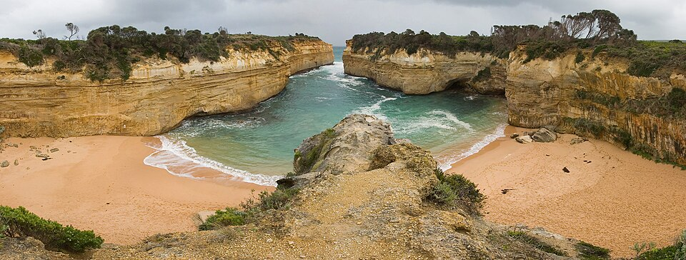
以 1878 年在此触礁的「洛克阿德号」命名，船上 54 人只有两人生还。通往海滩的台阶自 2022 年落石后关闭，在崖顶观景台看。
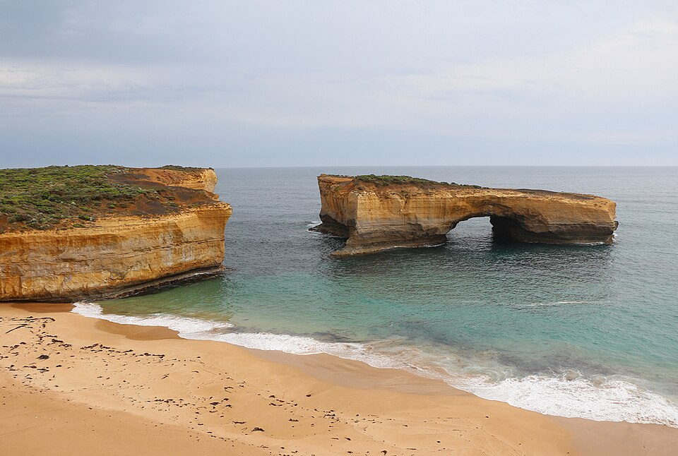
原本是连着岸的双拱石桥，1990 年靠岸的那一拱突然坍塌，两名游客被困在「岛」上，靠直升机才救下来，从此改叫「伦敦拱门」。
普芬比小火车(丹德农山) → 菲利普岛野生动物园 → 诺比司角 → 企鹅归巢 → 约午夜回城
企鹅归巢风雨无阻照常举行，但看台无遮蔽、海风大——防风雨外套必带，丹德农山与岛上温差大要多层穿衣。 🐧 闪光灯全程禁用（企鹅保护规定）。 🎫 仍需确认所订团是否已含 Penguin Parade 普通看台票；若不含须自订 penguins.org.au。 🌙 回城约 23:30–00:30——今天是周六，Night Network 通宵电车（19/86/96）正好开，落客点到住处步行也只 12–15 分钟。 ⚠️ 明天是离澳日，出门前先把行李收个七七八八。
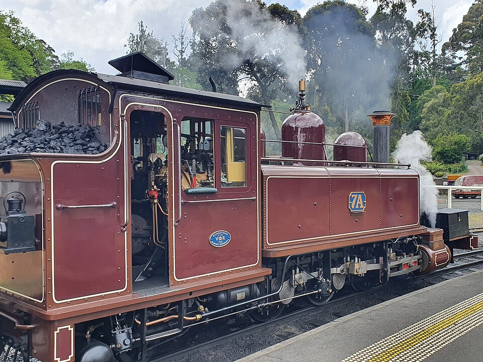
1900 年开通的窄轨蒸汽小火车，穿行丹德农山的蕨类森林。坐在车窗边把腿伸到车外，是它的招牌玩法。
可以亲手喂袋鼠和沙袋鼠，近距离看考拉。维州规定游客不能抱考拉，只能在旁边合影。
菲利普岛西端的木栈道观景点，远眺海豹岩，那里是澳洲最大的海狗栖息地之一。
每天日落后，世界上最小的企鹅——小蓝企鹅（三十多厘米高）成群从海里上岸回巢。看台上全程禁止拍照和摄像，看台也没有遮挡，要穿暖。
（机动）QVM/南墨市场 → Brighton 彩色小屋 → St Kilda → 下午 NGV/州立图书馆（机动） → 16:00–16:30 去机场 → HU484 离澳；Katherine 全天自由
🏃 本日撞 2026 墨尔本马拉松（全马周日上午）：St Kilda Rd、Flinders St、Southbank、皇家植物园、MCG 周边上午大范围封路，St Kilda Rd 电车（3/5/6/16/64/67/72）改道或停驶。➜ 上午市区↔海边走不受影响的 Sandringham 火车线，去机场走「步行/电车→南十字站→SkyBus」。 ✅ 去机场已定（09-26）：16:00–16:30 从南十字站上 SkyBus，最晚 17:00 上车（HU484 20:45 起飞，须 17:45 前到机场）；下午封路早已解除。 🧳 住宅公寓没有前台，延迟退房/寄存要跟房东谈；谈不拢就 07:30 带箱走 15 分钟到南十字站寄存。 👥 Katherine 今天不受约束：她 10.12 才走，行李留房里即可，全天自由。 😴 前一晚企鹅团约 24:00 才回城，今早别定太早的闹钟。
1867 年开业的老市场，招牌小吃是 dim sim（澳式烧卖）。周三、周五到周日开市。
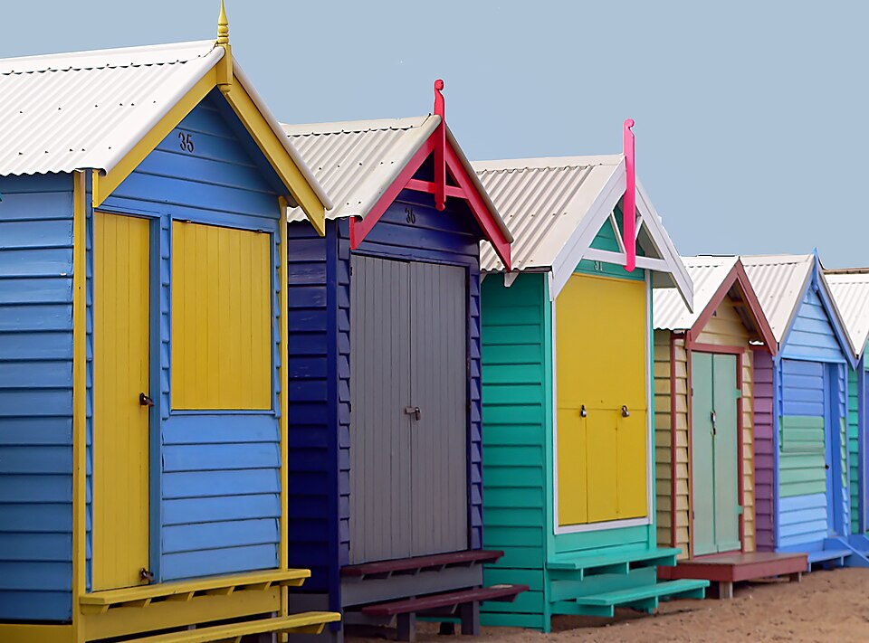
海滩上 82 座木头更衣小屋，外墙各有主题彩绘。小屋都是私人产权，只能在外面拍。
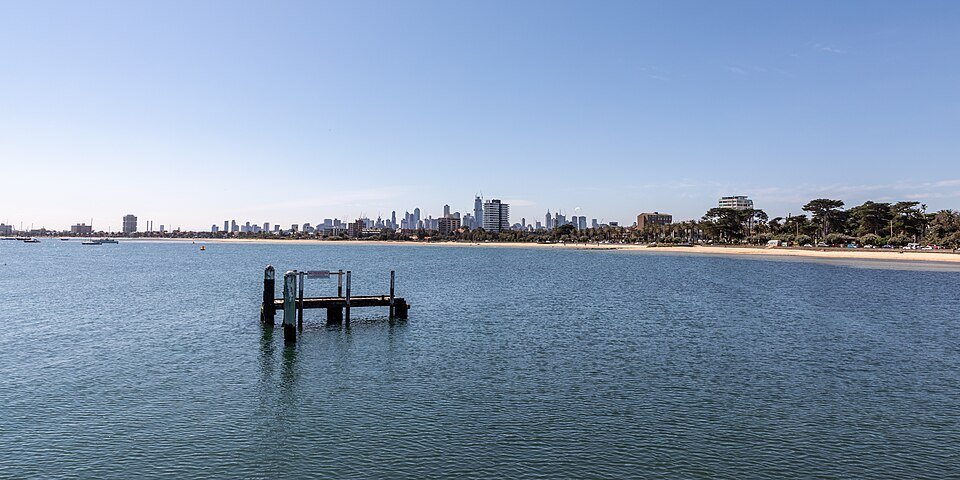
墨尔本的海滨区，月亮公园的大嘴入口是经典合影点；栈桥尽头的防波堤傍晚有小企鹅栖息。
1861 年创立，是澳洲最古老的公立美术馆。St Kilda Rd 馆大厅的彩色玻璃天花板值得躺下来看，常设展免费。
Duke 和 Eddy 10.11 晚上从墨尔本起飞，10.12 凌晨在海口入境、中午转机回上海；Katherine 多住一晚，10.12 早上直飞杭州，下午落地。
Duke/Eddy 凌晨落地海口、白天转机回上海；Katherine 05:00 出发 → JD386 直飞 → 16:00 抵杭州
这是硬约束的最后一天：HU484 若延误导致误接 HU7119，当日仍有多班海口→上海可改签（末班约 22:00 后）。入境后需提行李、过海关、重新安检值机，预留 ≥2.5h。台风季海口偶有航班大面积延误，落地后先看后续航班状态。 🔴 Katherine 这边的坑是清晨没车：SkyBus 本身 04:00 就开、每 10–15 分钟一班，但墨尔本 Night Network 通宵电车只在周五/周六夜运行——10.12 是周一凌晨不开，CBD 常规电车首班约 05:00 赶不上。➜ 前一晚必须预约网约车直达机场（约 25–30 分钟 / A$60–75），备选是拖箱步行 15 分钟到南十字站赶 SkyBus。 🧾 她的退税（TRS，柜台在 MEL T2）清晨人少更从容，但仍建议提前 90 分钟到。